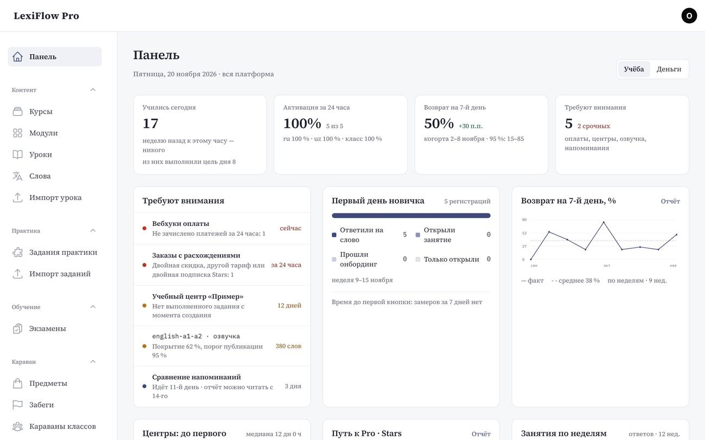
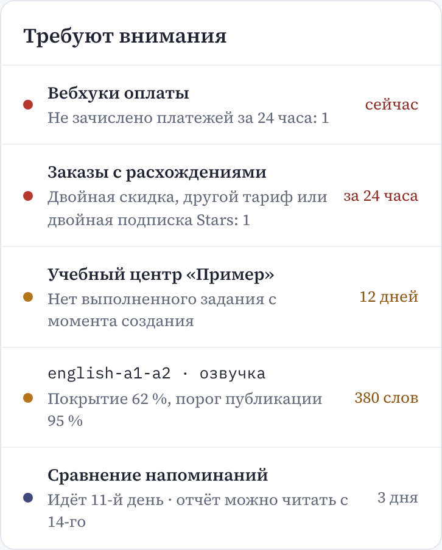
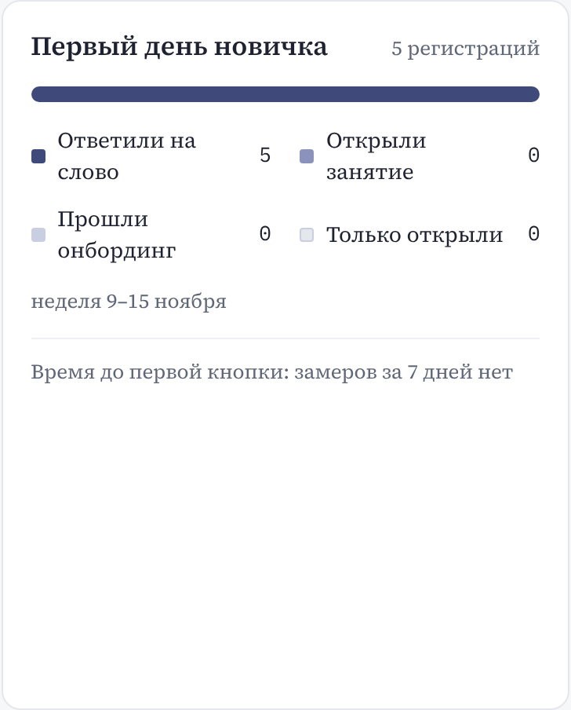
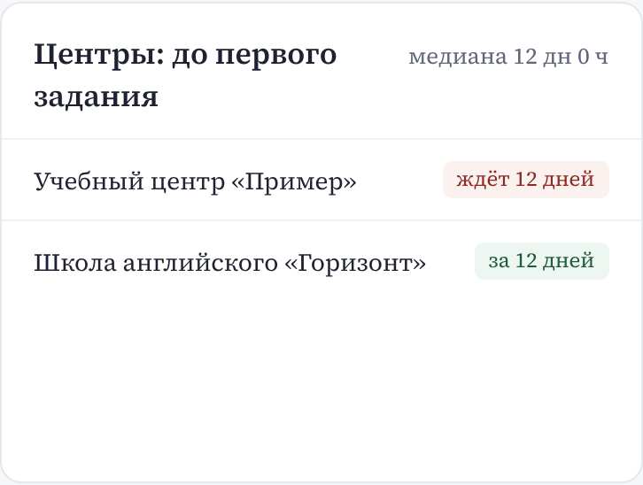
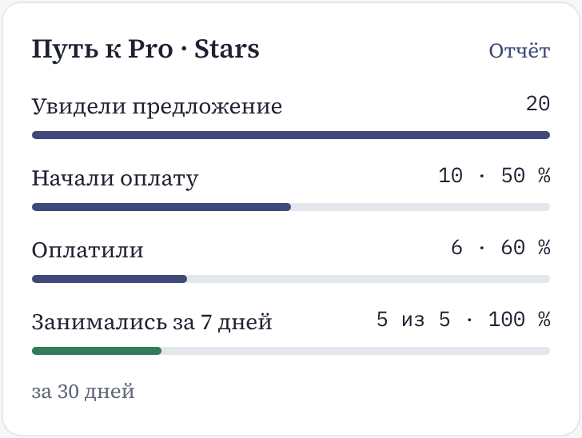
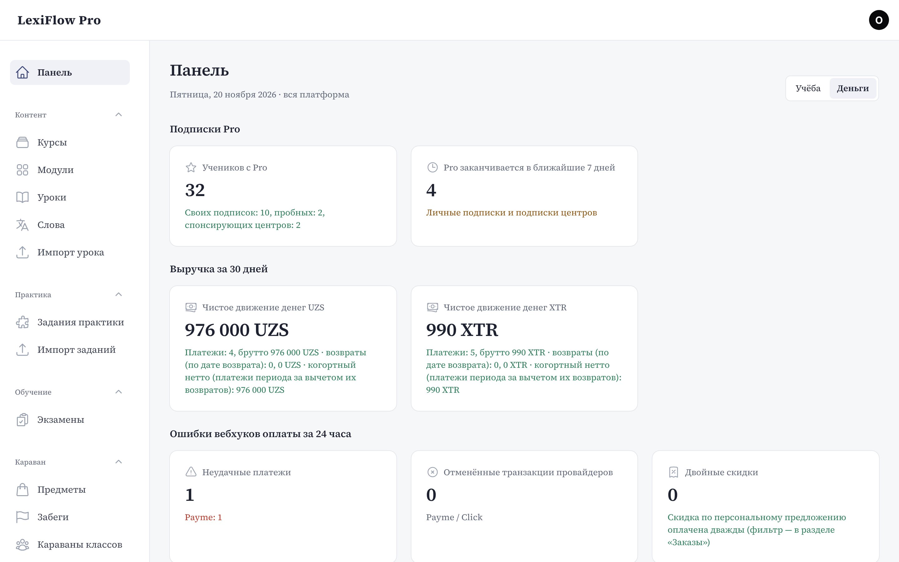
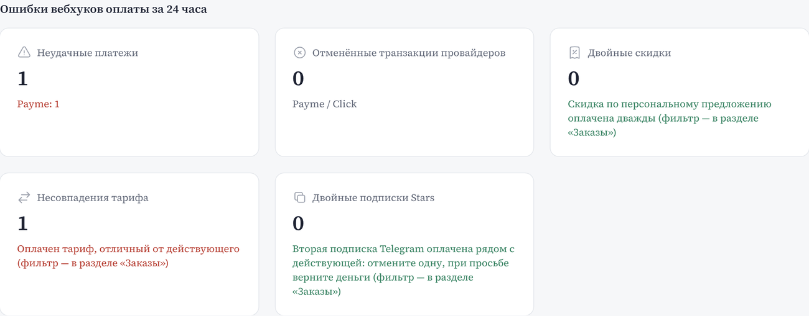
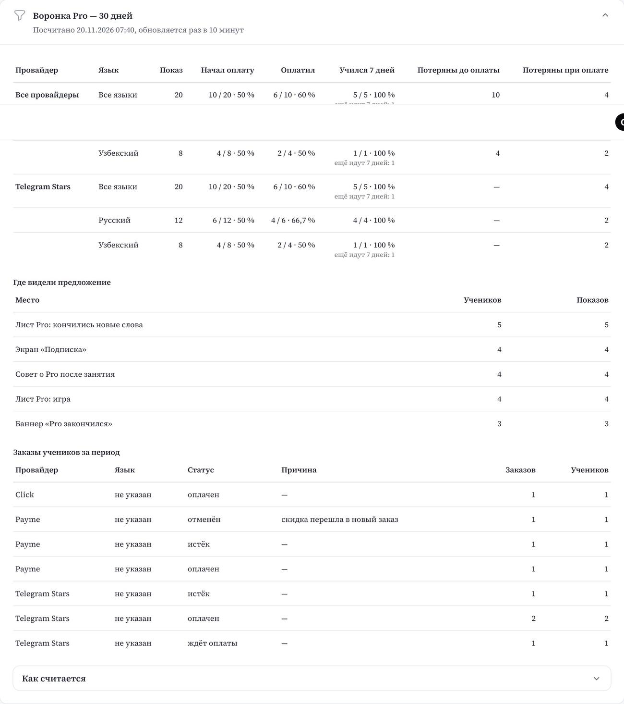
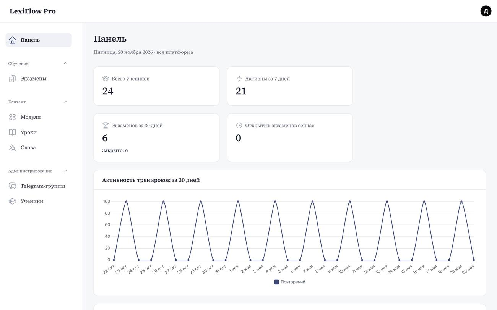

Главная страница /admin называется «Панель». Она отвечает на два вопроса: учатся ли люди и всё ли в порядке с деньгами. Начинайте с неё каждый рабочий день.
Под заголовком — сегодняшняя дата. Справа — переключатель вкладок Учёба и Деньги. Вкладка запоминается в адресе (/admin?tab=money), поэтому ссылку на нужную вкладку можно сохранить в закладки или отправить коллеге. Вкладку «Деньги» видит только администратор.

| Карточка | Что показывает | Как читать |
|---|---|---|
| Учились сегодня | сколько учеников ответили сегодня хотя бы на одну карточку (дата по Ташкенту); ниже — сравнение с тем же часом неделю назад и сколько из них выполнили цель дня | сравнивайте с прошлой неделей, а не со вчерашним днём: у будней и выходных разный ритм |
| Активация за 24 часа | доля новичков последней недели регистрации, которые дали первый учебный ответ раньше чем через сутки; ниже — то же для русского и узбекского интерфейса и для учеников классов | главный показатель «зацепило ли приложение». Подробно — в главе «Отчёт «Удержание»» |
| Возврат на 7-й день | доля новичков, которые занимались ровно на седьмой день после регистрации, по последней неделе, где этот день уже наступил; рядом — изменение в процентных пунктах и интервал «95 %» | при небольших когортах интервал широкий: не делайте выводов по одной неделе |
| Требуют внимания | сколько пунктов в одноимённом блоке и сколько из них срочных, какие темы (оплаты, центры, озвучка, напоминания) | «всё в порядке» — делать ничего не нужно |
Список дел на сегодня. Сверху — срочные (красная точка), ниже — предупреждения (жёлтая) и заметки (синяя). Если всё хорошо, блок пишет «Всё в порядке». Название строки — ссылка на место, где проблему решают.

| Пункт | Уровень | Что случилось | Что делать |
|---|---|---|---|
| Вебхуки оплаты — «Не зачислено платежей за 24 часа: N» | срочно | за последние сутки пришли деньги, которые не удалось зачислить: заказ истёк, сумма не совпала и т. п. Ученик заплатил, но Pro не получил | откройте ссылку — список «Платежи» с отбором «Не проведён». Разберите каждый платёж по главе «Платежи, заказы и транзакции» (раздел «Неудачный платёж») |
| Заказы с расхождениями — «Двойная скидка, другой тариф или двойная подписка Stars: N» | срочно | за сутки оплачен заказ с красной отметкой: скидка использована дважды, центр оплатил не свой текущий тариф или ученик оплатил вторую подписку Stars | раздел Заказы, фильтры «Двойная скидка», «Несовпадение тарифа», «Двойная подписка Stars»; что делать с каждым — в главе «Платежи, заказы и транзакции» |
| Название центра — «Нет выполненного задания с момента создания», N дней | предупреждение | активный центр создан 7 и более дней назад, а ни один его ученик ещё не выполнил задание. Три самых давних центра — отдельными строками, остальные — строкой «Другие центры» | свяжитесь с центром: привязана ли группа, создано ли задание. На каком шаге центр остановился, видно в блоке «Центры: до первого задания» и в виджете «Учебные центры — путь до первого результата» |
код-курса · озвучка — «Покрытие X %, порог публикации 95 %» | предупреждение | у опубликованного курса или курса на проверке аудио записано меньше чем для 95 % активных слов; справа — сколько слов без озвучки | если курс только что наполняли — подождите: слова озвучиваются сами в фоне. Если строка держится дольше часа, попросите технического администратора проверить покрытие и при необходимости запустить озвучку курса (глава «Импорт урока из файла и озвучка») |
| Google TTS · расход за месяц — «Израсходовано X % месячного предела: N из M символов» | предупреждение | озвучка израсходовала 90 % и больше месячного объёма, который ей разрешён. Каждое новое слово или диктант тратит часть объёма | сообщите техническому администратору: он проверит, что израсходовало объём (например, массовый импорт), и решит, поднимать ли предел. Предел защищает от неожиданного счёта за Google |
| Google TTS · расход за месяц — «Предел исчерпан: N из M символов. Озвучка стоит до нового месяца, ночная сверка доозвучит слова» | срочно | объём месяца закончился, новые слова до нового месяца не озвучиваются — ученики слышат их голосом телефона | для слов делать ничего не нужно: в новом месяце ночная сверка озвучит их сама. Диктанты за это время получат аудио «Ошибка» — в новом месяце нажмите у них Сгенерировать аудио заново (глава «Задания практики») |
| Очередь озвучки — «В очереди tts N заданий при пороге M: воркер low не успевает или не запущен» | предупреждение | слов и диктантов ждёт озвучки больше, чем обычно (порог по умолчанию — 3 000). Очередь не успевает или остановилась | если только что загружали много уроков или озвучивали все курсы разом — это нормально, подождите. Если нет или строка держится долго — сообщите техническому администратору: скорее всего, не работает обработчик очереди |
| Google TTS · вход отклонён — «Google отклонил ключ (код): озвучка остановлена…» | срочно | Google не принял ключ доступа к озвучке: ключ удалён или неверен, либо в проекте Google выключена служба или оплата. Озвучка полностью остановлена, новые слова звучат голосом телефона | срочно сообщите техническому администратору и перешлите текст строки с кодом: он заменит ключ или исправит проект Google и снова запустит озвучку. Из панели это не исправить |
| Сравнение напоминаний | заметка | идёт сравнение двух видов напоминаний («вопрос» и «обычный текст»). Строка показывает день сравнения и с какого дня можно читать отчёт (с 14-го) | до 14-го дня — ничего; потом попросите технического администратора выгрузить отчёт (глава «Отчёт «Удержание»», раздел «Сравнение напоминаний») |
Блок не пересчитывает данные сам, а берёт их из других блоков панели. Поэтому после исправления строка может держаться ещё немного: оплаты — до минуты, центры — до 10 минут, покрытие озвучки курса и расход за месяц — до 5 минут, очередь озвучки — до минуты. Строка «вход отклонён» уходит сразу, как технический администратор исправит ключ и снимет остановку. Обновите страницу позже.

| Блок | Что показывает |
|---|---|
| Первый день новичка | новички одной недели, разложенные по тому, как далеко они продвинулись в первые сутки: ответили на слово, открыли занятие, прошли онбординг (первичную настройку в боте), только открыли приложение. Строка «Время до первой кнопки» — сколько секунд ученик ждёт кнопку на экране «Сегодня» (75 % открытий быстрее этого значения), отдельно для Android и iOS. Сразу после обновления платформы там может быть «расчёт запущен» — обновите страницу через минуту |
| Возврат на 7-й день, % | линия по неделям регистрации и пунктир среднего. Ссылка «Отчёт» ведёт в раздел «Удержание» |
| Центры: до первого задания | медиана времени от создания центра до первого выполненного учеником задания и центры по одному: «ждёт N дней» или «за N дней» |
| Путь к Pro · Stars | за 30 дней: сколько учеников увидели предложение Pro, начали оплату, оплатили и занимались в течение 7 дней после оплаты. «Отчёт» открывает вкладку «Деньги» с подробной воронкой |
| Занятия по неделям | ответы учеников за 12 недель: повторения и новые слова |
| Всего учеников, Экзаменов за 30 дней | ученики платформы и активные за 7 дней; число экзаменов за месяц, закрытых и открытых сейчас |
| Активность тренировок за 30 дней | график ответов на карточки по дням (это число ответов, а не учеников) |
| Лучшие ученики за 30 дней, Самые трудные слова за 30 дней | десять учеников с наибольшим числом повторений в групповых занятиях; слова с наибольшей долей ошибок |
| SM-2 и FSRS за последние 28 дней | сравнение двух алгоритмов повторений: доля успешных повторений, повторений на выученное слово, удержание на 7-й день и «честность самооценки» (как часто ученик ошибается в слове, которое только что оценил «Легко»). Пока FSRS никому не включён, его сторона пустая |
| Первичная настройка — 7 дней | сколько учеников начали и завершили онбординг в боте за неделю, и доля завершивших |
| Караван — 7 дней | забеги игры «Караван», сколько учеников играли и какая это доля активных; забегов на игрока в день; сколько учеников после отказа «закончились бесплатные забеги» оплатили Pro; доля верных ответов в карточках у игроков и остальных |
| Форматы заданий — 7 дней | какая доля ответов пришлась на каждый формат карточки (самооценка, выбор перевода, на слух, написание и др.), всего и по языку интерфейса. Если «на слух» почти нет в одном языке, проверьте озвучку |
| Лиги — текущая неделя | группы еженедельной лиги, их уровень и число участников |
| Учебные центры — путь до первого результата | для каждого центра: сколько прошло от создания до привязки группы, до первого задания и до первого выполненного задания; центры без результата — сверху, самые давние первыми |
Нижние блоки загружаются, когда вы прокручиваете страницу: пока данных нет, на их месте написано «Загрузка...». Цифры на панели обновляются раз в несколько минут; чтобы увидеть новые, перезагрузите страницу.



| Блок | Что показывает |
|---|---|
| Подписки Pro | сколько учеников сейчас с Pro (свой, пробный или от центра — каждый ученик один раз) и у скольких подписок доступ кончается в ближайшие 7 дней |
| Выручка за 30 дней | отдельно по валютам: сумы (UZS) и Telegram Stars (XTR) никогда не складываются. Под суммой — число платежей, сумма до возвратов и возвраты |
| Ошибки вебхуков оплаты за 24 часа | неудачные платежи (по провайдерам), отменённые транзакции Payme и Click, двойные скидки, несовпадения тарифа и двойные подписки Stars. В норме везде 0, кроме отменённых транзакций: их создаёт и покупатель, закрывший страницу оплаты, поэтому важен только резкий рост |
| Воронка Pro — 30 дней | подробная воронка по провайдерам и языкам: показ предложения → начал оплату → оплатил → учился 7 дней, плюс где ученики видели предложение и что стало с заказами (оплачен, истёк, отменён и почему). Кнопка «Как считается» раскрывает определения |
| Учебные центры — места и очередь | для каждого центра: активные группы, сколько учеников заняли места, сколько в очереди, лимит мест и оплачивает ли центр Pro сейчас |


Учитель не видит вкладок и блоков платформы. У него пять блоков, и все считают только его группы: «Всего учеников», «Экзаменов за 30 дней», «Активность тренировок за 30 дней» (групповые занятия его групп), «Лучшие ученики за 30 дней» и «Самые трудные слова за 30 дней». Личные занятия учеников учитель не видит.
